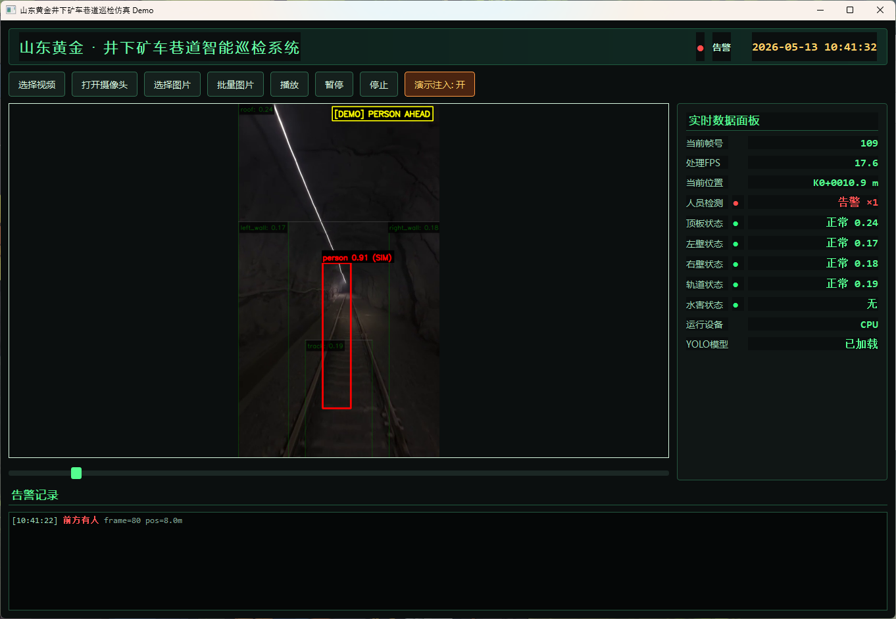
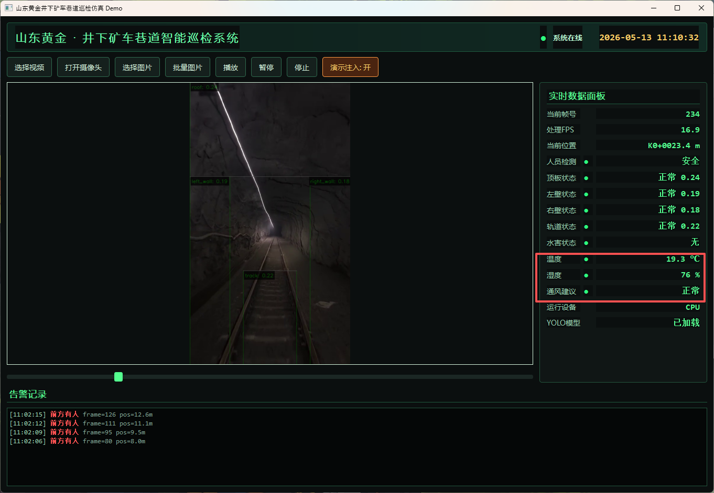
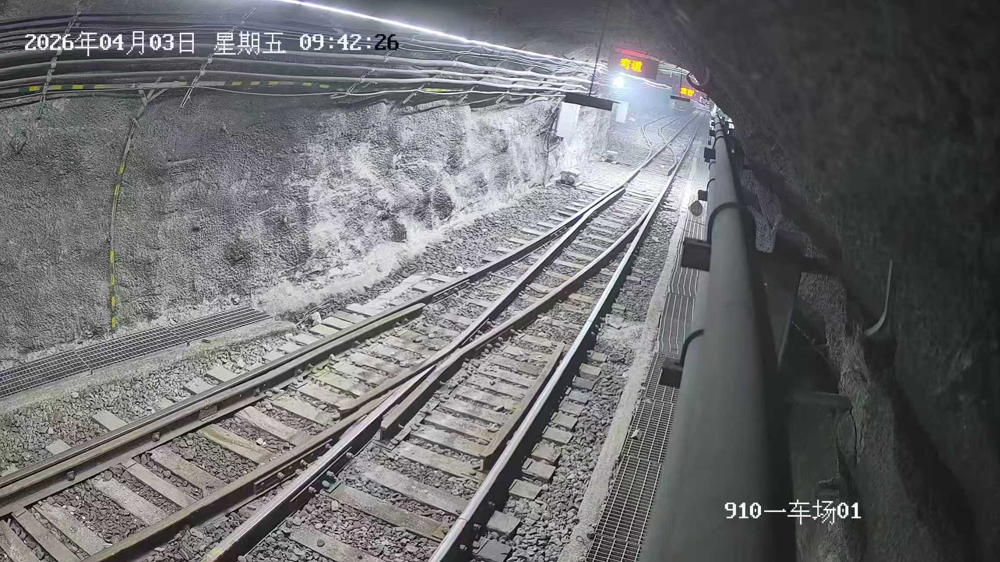
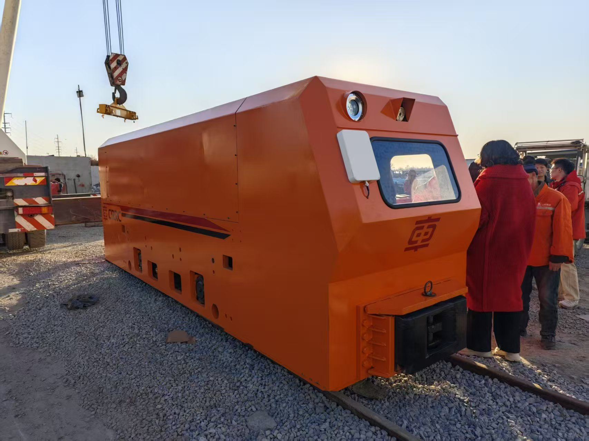

First-of-its-kind vehicle-mounted rail inspection system for an underground gold mine. End-to-end ownership of the perception stack — KBA18(F) explosion-proof camera integration, Livox Mid-360 LiDAR for 3D mapping, on-board inference on Jetson Orin NX 16GB, and a full data plus simulation architecture for iteration.
面向井下金矿的首创车载轨道巡检系统。端到端负责整套感知栈 —— KBA18(F) 防爆相机集成、Livox Mid-360 LiDAR 三维建图、Jetson Orin NX 16GB 板载推理，以及一套为持续迭代而搭建的数据 + 仿真架构。
The system replaces human patrol on one of the most hazardous legs of underground gold mining — the haulage rail. Every detection and every frame is a step toward removing people from harm, while giving mine operators a continuous, queryable record of tunnel health.
系统替代人工，巡检井下金矿最危险的一段 —— 运输轨道。每一次检测、每一帧画面，都是在让人远离危险，同时为矿方留下一份连续、可查询的隧道健康档案。



